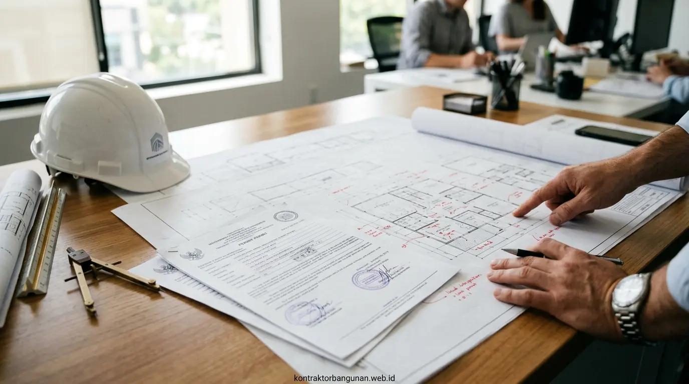

Mengenal PBG sebagai Pengganti IMB di Malang
Berdasarkan Peraturan Pemerintah (PP) No. 16 Tahun 2021, istilah Izin Mendirikan Bangunan (IMB) telah resmi digantikan oleh Persetujuan Bangunan Gedung (PBG). PBG merupakan perizinan yang diberikan kepada pemilik bangunan gedung untuk membangun baru, mengubah, memperluas, mengurangi, dan/atau merawat bangunan gedung sesuai dengan standar teknis yang berlaku.
Bagi pemilik properti rumah hunian, ruko, gudang, maupun fasilitas usaha di wilayah Malang Raya, kepemilikan PBG sangat krusial untuk mencegah sanksi administratif, pembongkaran paksa, serta menjamin nilai investasi properti Anda di mata perbankan.
- PBG diperlukan sebagai syarat utama penerbitan Sertifikat Laik Fungsi (SLF) serta agunan fasilitas kredit perbankan (KPR / Kredit Konstruksi).
- Bangunan tanpa PBG berisiko dikenakan denda administratif hingga penghentian sementara kegiatan pembangunan oleh Satpol PP Kota/Kabupaten Malang.
Syarat dan Dokumen Wajib Pengurusan PBG
Pengurusan PBG dilakukan secara terintegrasi melalui portal resmi Sistem Informasi Bangunan Gedung (SIMBG). Agar proses verifikasi berjalan lancar, berikut adalah dokumen teknis dan administratif yang wajib dipersiapkan:
- Dokumen Administratif: KTP/NPWP pemohon, Sertifikat Tanah (SHM/HGB), serta bukti pelunasan PBB terbaru.
- Keterangan Rencana Kota (KRK): Peta advis plan tata kota dari Dinas PUPR / Perizinan setempat.
- Gambar Kerja Teknis (DED): Gambar arsitektur (denah, tampak, potongan), gambar struktur beton bertulang, serta gambar mekanikal, elektrikal, dan plumbing (MEP).
- Perhitungan Struktur Resmi: Perhitungan analisis beban teknis yang ditandatangani oleh penanggung jawab teknis ber-sertifikat (SKA / SIP).

Penyusunan gambar kerja teknis DED dan perhitungan struktur berstandar SNI untuk syarat sidang perizinan SIMBG.
Alur dan Tahapan Pengurusan PBG via SIMBG Online
Memahami alur pengurusan PBG di Malang membantu pemohon memantau progres perizinan secara transparan:
| Tahapan PBG | Deskripsi Kegiatan | Durasi Estimasi |
|---|---|---|
| 1. Pengurusan KRK | Pengajuan Keterangan Rencana Kota ke Dinas Pertanahan & PUPR. | 3 – 5 Hari Kerja |
| 2. Pembuatan DED & SKA | Penyusunan gambar arsitektur, struktur, & sanitasi oleh tim ahli sipil. | 5 – 7 Hari Kerja |
| 3. Input Sistem SIMBG | Pendaftaran akun & upload berkas digital ke portal nasional SIMBG. | 1 – 2 Hari Kerja |
| 4. Sidang Konsultasi TPA/TPT | Pemeriksaan teknis oleh Tim Profesi Ahli (TPA) Pemkot/Pemkab Malang. | 3 – 5 Hari Kerja |
| 5. Bayar Retribusi & Terbit PBG | Pembayaran SKRD retribusi resmi daerah dan penerbitan dokumen PBG. | 1 – 2 Hari Kerja |
Mengapa Menggunakan Jasa Urus PBG Cepat Murah Malang?
Banyak pemilik bangunan mengalami kendala saat mengurus PBG secara mandiri karena keterbatasan penyediaan gambar kerja bersertifikat SKA atau minimnya pemahaman sistem SIMBG. Memilih Jasa Urus PBG Cepat Murah Malang memberikan berbagai keuntungan nyata:
- Proses Cepat & Garansi Terbit: Didampingi langsung oleh konsultan perizinan dan arsitek lokal Malang yang berpengalaman dalam prosedur perizinan daerah.
- Lengkap dengan Gambar Kerja DED: Tim kami menyediakan seluruh paket gambar teknis 2D/3D serta analisis struktur beton tanpa perlu menyewa arsitek terpisah.
- Harga Terjangkau & Transparan: Biaya jasa fleksibel sesuai skala luas bangunan tanpa adanya biaya tersembunyi.
- Bebas Repot Sidang TPA: Kami mewakili pemohon dalam menyempurnakan catatan revisi dari Tim Penilai Teknis daerah.
- Serahkan seluruh kerumitan berkas PBG Malang Anda kepada tim profesional kami, sehingga Anda dapat fokus pada persiapan operasional bisnis atau hunian keluarga.
Pertanyaan Populer Seputar Pengurusan PBG Malang
Kesimpulan Praktis
Menggunakan layanan Jasa Urus PBG Cepat dan Murah untuk Wilayah Malang Raya adalah solusi paling aman dan praktis untuk memastikan legalitas bangunan rumah, ruko, maupun gedung usaha Anda terjamin secara hukum tanpa membuang waktu dan biaya berlebih. Hubungi konsultan kami untuk konsultasi perizinan gratis.